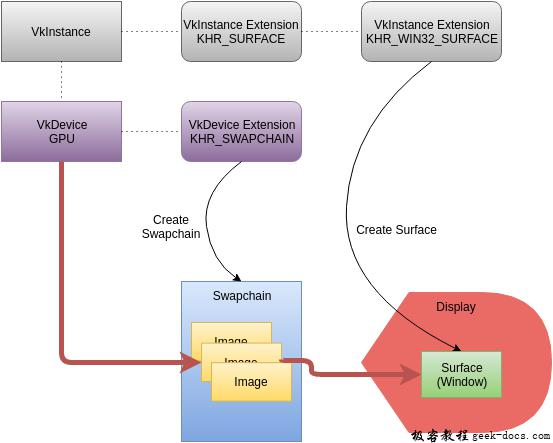
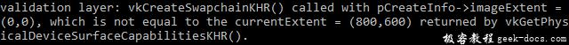

Vulkan 交换链，在这一章节，我们了解一下将渲染图像提交到屏幕的基本机制。这种机制称为交换链，并且需要在Vulkan上下文中被明确创建。从屏幕的角度观察，交换链本质上是一个图像队列。应用程序作为生产者会获取图像进行绘制，然后将其返还给交换链图像队列，等待屏幕消费。交换链的具体配置信息决定了应用程序提交绘制图像到队列的条件以及图像队列表现的效果，但交换链的通常使用目的是使绘制图像的最终呈现与屏幕的刷新频率同步。可以简单将交换链理解为一个队列，同步从生产者，即应用程序绘制图像，到消费者，屏幕刷新的Produce-Consume关系。在深入内容前看一下官方给出的整体交换链示例图。

当然图示上有一些陌生的关键字会在接下来的章节中逐一介绍，在此有一个整体概念。
检查交换链支持
并不是所有的图形卡具备能力将绘制的图像直接显示到屏幕上。比如一个GPU卡是为服务器设计的，那就不会具备任何有关显示的输出。其次，图像呈现是与surface打交道，而surface又与具体的窗体系统强关联，从这个角度，我们可以认为它不是Vulkan核心的部分。在查询图形卡是否支持后，需要启用VK_KHR_swapchain设备级别的扩展。
所以呢，我们首先扩展之前的isDeviceSuitable函数，确认设备是否支持。之前我们已经了解如何列出VkPhysicalDevice支持的扩展列表，在此就不展开具体细节了。请注意的是，Vulkan头文件提供给了一个方便的宏VK_KHR_SWAPCHAIN_EXTENSION_NAME，该宏定义为VK_KHR_swapchain。使用宏的优点就是避免拼写错误。
首先声明需要的设备扩展清单，与之前开启validation layers的列表是相似的。
const std::vector<const char*> deviceExtensions = {
VK_KHR_SWAPCHAIN_EXTENSION_NAME
};
接下来，创建一个从isDeviceSuitable调用的新函数checkDeviceExtensionSupport作为额外的检查逻辑:
bool isDeviceSuitable(VkPhysicalDevice device) {
QueueFamilyIndices indices = findQueueFamilies(device); bool extensionsSupported = checkDeviceExtensionSupport(device); return indices.isComplete() && extensionsSupported;
}bool checkDeviceExtensionSupport(VkPhysicalDevice device) {
return true;
}
修改函数体以便于枚举设备所有集合，并检测是否所有需要的扩展在其中。
bool checkDeviceExtensionSupport(VkPhysicalDevice device) {
uint32_t extensionCount;
vkEnumerateDeviceExtensionProperties(device, nullptr, &extensionCount, nullptr); std::vector<VkExtensionProperties> availableExtensions(extensionCount);
vkEnumerateDeviceExtensionProperties(device, nullptr, &extensionCount, availableExtensions.data()); std::set<std::string> requiredExtensions(deviceExtensions.begin(), deviceExtensions.end()); for (const auto& extension : availableExtensions) {
requiredExtensions.erase(extension.extensionName);
} return requiredExtensions.empty();
}
选择一组字符串来表示未经确认过的扩展名。这样做可以比较容易的进行增删及遍历的次序。当然也可以像CheckValidationLayerSupport函数那样做嵌套的循环。性能的差异在这里是不关紧要的。现在运行代码验证图形卡是否能够顺利创建一个交换链。需要注意的是前一个章节中验证过的presentation队列有效性，并没有明确指出交换链扩展也必须有效支持。好在扩展必须明确的开启。
启用扩展需要对逻辑设备的创建结构体做一些小的改动:
createInfo.enabledExtensionCount = static_cast<uint32_t>(deviceExtensions.size());
createInfo.ppEnabledExtensionNames = deviceExtensions.data();
查询交换链支持的详情
如果仅仅是为了测试交换链的有效性是远远不够的，因为它还不能很好的与窗体surface兼容。创建交换链同样也需要很多设置，所以我们需要了解一些有关设置的细节。
基本上有三大类属性需要设置:
- 基本的surface功能属性(min/max number of images in swap chain, min/max width and height of images)
- Surface格式(pixel format, color space)
- 有效的presentation模式
与findQueueFamilies类似，我们使用结构体一次性的传递详细的信息。三类属性封装在如下结构体中：
struct SwapChainSupportDetails {
VkSurfaceCapabilitiesKHR capabilities;
std::vector<VkSurfaceFormatKHR> formats;
std::vector<VkPresentModeKHR> presentModes;
};
现在创建新的函数querySwapChainSupport填充该结构体。
SwapChainSupportDetails querySwapChainSupport(VkPhysicalDevice device) {
SwapChainSupportDetails details; return details;
}
本小节涉及如何查询包含此信息的结构体，这些结构体的含义及包含的数据将在下一节讨论。
我们现在开始基本的surface功能设置部分。这些属性可以通过简单的函数调用查询，并返回到单个VkSurfaceCapabilitiesKHR结构体中。
vkGetPhysicalDeviceSurfaceCapabilitiesKHR(device, surface, &details.capabilities);
这个函数需要VkPhysicalDevice和VkSurfaceKHR窗体surface决定支持哪些具体功能。所有用于查看支持功能的函数都需要这两个参数，因为它们是交换链的核心组件。
下一步查询支持的surface格式。因为获取到的是一个结构体列表，具体应用形式如下:
uint32_t formatCount;
vkGetPhysicalDeviceSurfaceFormatsKHR(device, surface, &formatCount, nullptr);if (formatCount != 0) {
details.formats.resize(formatCount);
vkGetPhysicalDeviceSurfaceFormatsKHR(device, surface, &formatCount, details.formats.data());
}
确保集合对于所有有效的格式可扩充。最后查询支持的presentation模式，同样的方式，使用vkGetPhysicalDeviceSurfacePresentModesKHR:
uint32_t presentModeCount;
vkGetPhysicalDeviceSurfacePresentModesKHR(device, surface, &presentModeCount, nullptr);if (presentModeCount != 0) {
details.presentModes.resize(presentModeCount);
vkGetPhysicalDeviceSurfacePresentModesKHR(device, surface, &presentModeCount, details.presentModes.data());
}
现在结构体的相关细节介绍完毕，让我们扩充isDeviceSuitable函数，从而利用该函数验证交换链足够的支持。在本章节中交换链的支持是足够的，因为对于给定的窗体surface，它至少支持一个图像格式，一个presentaion模式。
bool swapChainAdequate = false;
if (extensionsSupported) {
SwapChainSupportDetails swapChainSupport = querySwapChainSupport(device);
swapChainAdequate = !swapChainSupport.formats.empty() && !swapChainSupport.presentModes.empty();
}
比较重要的是尝试查询交换链的支持是在验证完扩展有效性之后进行。函数的最后一行代码修改为:
return indices.isComplete() && extensionsSupported && swapChainAdequate;
为交换链选择正确的设置
如果swapChainAdequate条件足够，那么对应的支持的足够的，但是根据不同的模式仍然有不同的最佳选择。我们编写一组函数，通过进一步的设置查找最匹配的交换链。这里有三种类型的设置去确定:
- Surface格式 (color depth)
- Presentation mode (conditions for “swapping” image to the screen)
- Swap extent (resolution of images in swap chain)
首先在脑海中对每一个设置都有一个理想的数值，如果达成一致我们就使用，否则我们一起创建一些逻辑去找到更好的规则、数值。
Surface 格式
这个函数用来设置surface格式。我们传递formats作为函数的参数，类型为SwapChainSupportDetails。
VkSurfaceFormatKHR chooseSwapSurfaceFormat(const std::vector<VkSurfaceFormatKHR>& availableFormats) {}
每个VkSurfaceFormatKHR结构都包含一个format和一个colorSpace成员。format成员变量指定色彩通道和类型。比如，VK_FORMAT_B8G8R8A8_UNORM代表了我们使用B,G,R和alpha次序的通道，且每一个通道为无符号8bit整数，每个像素总计32bits。colorSpace成员描述SRGB颜色空间是否通过VK_COLOR_SPACE_SRGB_NONLINEAR_KHR标志支持。需要注意的是在较早版本的规范中，这个标志名为VK_COLORSPACE_SRGB_NONLINEAR_KHR。
如果可以我们尽可能使用SRGB(彩色语言协议)，因为它会得到更容易感知的、精确的色彩。直接与SRGB颜色打交道是比较有挑战的，所以我们使用标准的RGB作为颜色格式，这也是通常使用的一个格式VK_FORMAT_B8G8R8A8_UNORM。
最理想的情况是surface没有设置任何偏向性的格式，这个时候Vulkan会通过仅返回一个VkSurfaceFormatKHR结构表示，且该结构的format成员设置为VK_FORMAT_UNDEFINED。
if (availableFormats.size() == 1 && availableFormats[0].format == VK_FORMAT_UNDEFINED) {
return {VK_FORMAT_B8G8R8A8_UNORM, VK_COLOR_SPACE_SRGB_NONLINEAR_KHR};
}
如果不能自由的设置格式，那么我们可以通过遍历列表设置具有偏向性的组合:
for (const auto& availableFormat : availableFormats) {
if (availableFormat.format == VK_FORMAT_B8G8R8A8_UNORM && availableFormat.colorSpace == VK_COLOR_SPACE_SRGB_NONLINEAR_KHR) {
return availableFormat;
}
}
如果以上两种方式都失效了，这个时候我们可以通过“优良”进行打分排序，但是大多数情况下会选择第一个格式作为理想的选择。
VkSurfaceFormatKHR chooseSwapSurfaceFormat(const std::vector<VkSurfaceFormatKHR>& availableFormats) {
if (availableFormats.size() == 1 && availableFormats[0].format == VK_FORMAT_UNDEFINED) {
return {VK_FORMAT_B8G8R8A8_UNORM, VK_COLOR_SPACE_SRGB_NONLINEAR_KHR};
} for (const auto& availableFormat : availableFormats) {
if (availableFormat.format == VK_FORMAT_B8G8R8A8_UNORM && availableFormat.colorSpace == VK_COLOR_SPACE_SRGB_NONLINEAR_KHR) {
return availableFormat;
}
} return availableFormats[0];
}
演示模式
presentation模式对于交换链是非常重要的，因为它代表了在屏幕呈现图像的条件。在Vulkan中有四个模式可以使用:
- VK_PRESENT_MODE_IMMEDIATE_KHR: 应用程序提交的图像被立即传输到屏幕呈现，这种模式可能会造成撕裂效果。
- VK_PRESENT_MODE_FIFO_KHR: 交换链被看作一个队列，当显示内容需要刷新的时候，显示设备从队列的前面获取图像，并且程序将渲染完成的图像插入队列的后面。如果队列是满的程序会等待。这种规模与视频游戏的垂直同步很类似。显示设备的刷新时刻被成为“垂直中断”。
- VK_PRESENT_MODE_FIFO_RELAXED_KHR: 该模式与上一个模式略有不同的地方为，如果应用程序存在延迟，即接受最后一个垂直同步信号时队列空了，将不会等待下一个垂直同步信号，而是将图像直接传送。这样做可能导致可见的撕裂效果。
- VK_PRESENT_MODE_MAILBOX_KHR: 这是第二种模式的变种。当交换链队列满的时候，选择新的替换旧的图像，从而替代阻塞应用程序的情形。这种模式通常用来实现三重缓冲区，与标准的垂直同步双缓冲相比，它可以有效避免延迟带来的撕裂效果。
逻辑上看仅仅VR_PRESENT_MODE_FIFO_KHR模式保证可用性，所以我们再次增加一个函数查找最佳的模式:
VkPresentModeKHR chooseSwapPresentMode(const std::vector<VkPresentModeKHR> availablePresentModes) {
return VK_PRESENT_MODE_FIFO_KHR;
}
我个人认为三级缓冲是一个非常好的策略。它允许我们避免撕裂，同时仍然保持相对低的延迟，通过渲染尽可能新的图像，直到接受垂直同步信号。所以我们看一下列表，它是否可用:
VkPresentModeKHR chooseSwapPresentMode(const std::vector<VkPresentModeKHR> availablePresentModes) {
for (const auto& availablePresentMode : availablePresentModes) {
if (availablePresentMode == VK_PRESENT_MODE_MAILBOX_KHR) {
return availablePresentMode;
}
} return VK_PRESENT_MODE_FIFO_KHR;
}
遗憾的是，一些驱动程序目前并不支持VK_PRESENT_MODE_FIFO_KHR,除此之外如果VK_PRESENT_MODE_MAILBOX_KHR也不可用，我们更倾向使用VK_PRESENT_MODE_IMMEDIATE_KHR:
VkPresentModeKHR chooseSwapPresentMode(const std::vector<VkPresentModeKHR> availablePresentModes) {
VkPresentModeKHR bestMode = VK_PRESENT_MODE_FIFO_KHR; for (const auto& availablePresentMode : availablePresentModes) {
if (availablePresentMode == VK_PRESENT_MODE_MAILBOX_KHR) {
return availablePresentMode;
} else if (availablePresentMode == VK_PRESENT_MODE_IMMEDIATE_KHR) {
bestMode = availablePresentMode;
}
} return bestMode;
}
交换范围
还剩下一个属性，为此我们添加一个函数:
VkExtent2D chooseSwapExtent(const VkSurfaceCapabilitiesKHR& capabilities) {}
交换范围是指交换链图像的分辨率，它几乎总是等于我们绘制窗体的分辨率。分辨率的范围被定义在VkSurfaceCapabilitiesKHR结构体中。Vulkan告诉我们通过设置currentExtent成员的width和height来匹配窗体的分辨率。然而，一些窗体管理器允许不同的设置，意味着将currentExtent的width和height设置为特殊的数值表示:uint32_t的最大值。在这种情况下，我们参考窗体minImageExtent和maxImageExtent选择最匹配的分辨率。
VkExtent2D chooseSwapExtent(const VkSurfaceCapabilitiesKHR& capabilities) {
if (capabilities.currentExtent.width != std::numeric_limits<uint32_t>::max()) {
return capabilities.currentExtent;
} else {
VkExtent2D actualExtent = {WIDTH, HEIGHT}; actualExtent.width = std::max(capabilities.minImageExtent.width, std::min(capabilities.maxImageExtent.width, actualExtent.width));
actualExtent.height = std::max(capabilities.minImageExtent.height, std::min(capabilities.maxImageExtent.height, actualExtent.height)); return actualExtent;
}
}
max和min函数用于将WIDTH和HEIGHT收敛在实际支持的minimum和maximum范围中。在这里确认包含<algorithm>头文件。
创建交换链
现在我们已经有了这些辅助函数，用以在运行时帮助我们做出明智的选择，最终获得有了创建交换链所需要的所有信息。
创建一个函数createSwapChain，在initVulkan函数中，该函数会在创建逻辑设备之后调用。
void initVulkan() {
createInstance();
setupDebugCallback();
createSurface();
pickPhysicalDevice();
createLogicalDevice();
createSwapChain();
}void createSwapChain() {
SwapChainSupportDetails swapChainSupport = querySwapChainSupport(physicalDevice); VkSurfaceFormatKHR surfaceFormat = chooseSwapSurfaceFormat(swapChainSupport.formats);
VkPresentModeKHR presentMode = chooseSwapPresentMode(swapChainSupport.presentModes);
VkExtent2D extent = chooseSwapExtent(swapChainSupport.capabilities);
}
实际上还有一些小事情需要确定，但是比较简单，所以没有单独创建函数。第一个是交换链中的图像数量，可以理解为队列的长度。它指定运行时图像的最小数量，我们将尝试大于1的图像数量，以实现三重缓冲。
uint32_t imageCount = swapChainSupport.capabilities.minImageCount + 1;
if (swapChainSupport.capabilities.maxImageCount > 0 && imageCount > swapChainSupport.capabilities.maxImageCount) {
imageCount = swapChainSupport.capabilities.maxImageCount;
}
对于maxImageCount数值为0代表除了内存之外没有限制，这就是为什么我们需要检查。
与Vulkan其他对象的创建过程一样，创建交换链也需要填充大量的结构体:
VkSwapchainCreateInfoKHR createInfo = {};
createInfo.sType = VK_STRUCTURE_TYPE_SWAPCHAIN_CREATE_INFO_KHR;
createInfo.surface = surface;
在指定交换链绑定到具体的surface之后，需要指定交换链图像有关的详细信息:
createInfo.minImageCount = imageCount;
createInfo.imageFormat = surfaceFormat.format;
createInfo.imageColorSpace = surfaceFormat.colorSpace;
createInfo.imageExtent = extent;
createInfo.imageArrayLayers = 1;
createInfo.imageUsage = VK_IMAGE_USAGE_COLOR_ATTACHMENT_BIT;
imageArrayLayers指定每个图像组成的层数。除非我们开发3D应用程序，否则始终为1。imageUsage位字段指定在交换链中对图像进行的具体操作。在本小节中，我们将直接对它们进行渲染，这意味着它们作为颜色附件。也可以首先将图像渲染为单独的图像，进行后处理操作。在这种情况下可以使用像VK_IMAGE_USAGE_TRANSFER_DST_BIT这样的值，并使用内存操作将渲染的图像传输到交换链图像队列。
QueueFamilyIndices indices = findQueueFamilies(physicalDevice);
uint32_t queueFamilyIndices[] = {(uint32_t) indices.graphicsFamily, (uint32_t) indices.presentFamily};if (indices.graphicsFamily != indices.presentFamily) {
createInfo.imageSharingMode = VK_SHARING_MODE_CONCURRENT;
createInfo.queueFamilyIndexCount = 2;
createInfo.pQueueFamilyIndices = queueFamilyIndices;
} else {
createInfo.imageSharingMode = VK_SHARING_MODE_EXCLUSIVE;
createInfo.queueFamilyIndexCount = 0; // Optional
createInfo.pQueueFamilyIndices = nullptr; // Optional
}
接下来，我们需要指定如何处理跨多个队列簇的交换链图像。如果graphics队列簇与presentation队列簇不同，会出现如下情形。我们将从graphics队列中绘制交换链的图像，然后在另一个presentation队列中提交他们。多队列处理图像有两种方法:
- VK_SHARING_MODE_EXCLUSIVE: 同一时间图像只能被一个队列簇占用，如果其他队列簇需要其所有权需要明确指定。这种方式提供了最好的性能。
- VK_SHARING_MODE_CONCURRENT: 图像可以被多个队列簇访问，不需要明确所有权从属关系。
在本小节中，如果队列簇不同，将会使用concurrent模式，避免处理图像所有权从属关系的内容，因为这些会涉及不少概念，建议后续的章节讨论。Concurrent模式需要预先指定队列簇所有权从属关系，通过queueFamilyIndexCount和pQueueFamilyIndices参数进行共享。如果graphics队列簇和presentation队列簇相同，我们需要使用exclusive模式，因为concurrent模式需要至少两个不同的队列簇。
createInfo.preTransform = swapChainSupport.capabilities.currentTransform;
如果交换链支持(supportedTransforms in capabilities),我们可以为交换链图像指定某些转换逻辑，比如90度顺时针旋转或者水平反转。如果不需要任何transoform操作，可以简单的设置为currentTransoform。
createInfo.compositeAlpha = VK_COMPOSITE_ALPHA_OPAQUE_BIT_KHR;
混合Alpha字段指定alpha通道是否应用与与其他的窗体系统进行混合操作。如果忽略该功能，简单的填VK_COMPOSITE_ALPHA_OPAQUE_BIT_KHR。
createInfo.presentMode = presentMode;
createInfo.clipped = VK_TRUE;
presentMode指向自己。如果clipped成员设置为VK_TRUE，意味着我们不关心被遮蔽的像素数据，比如由于其他的窗体置于前方时或者渲染的部分内容存在于可是区域之外，除非真的需要读取这些像素获数据进行处理，否则可以开启裁剪获得最佳性能。
createInfo.oldSwapchain = VK_NULL_HANDLE;
最后一个字段oldSwapChain。Vulkan运行时，交换链可能在某些条件下被替换，比如窗口调整大小或者交换链需要重新分配更大的图像队列。在这种情况下，交换链实际上需要重新分配创建，并且必须在此字段中指定对旧的引用，用以回收资源。这是一个比较复杂的话题，我们会在后面的章节中详细介绍。现在假设我们只会创建一个交换链。
现在添加一个类成员变量存储VkSwapchainKHR对象:
VkSwapchainKHR swapChain;
创建交换链只需要简单的调用函数:vkCreateSwapchainKHR:
if (vkCreateSwapchainKHR(device, &createInfo, nullptr, &swapChain) != VK_SUCCESS) {
throw std::runtime_error("failed to create swap chain!");
}
参数是逻辑设备，交换链创建的信息，可选择的分配器和一个存储交换后的句柄指针。它也需要在设备被清理前，进行销毁操作，通过调用vkDestroySwapchainKHR。
void cleanup() {
vkDestroySwapchainKHR(device, swapChain, nullptr);
...
}
现在运行程序确保交换链创建成功！
尝试移除createInfo.imageExtent = extent;并在validation layers开启的条件下，validation layers会立刻捕获到有帮助的异常信息:

获取交换链图像
交换链创建后，需要获取VkImage相关的句柄。它会在后续渲染的章节中引用。添加类成员变量存储该句柄:
std::vector<VkImage> swapChainImages;
图像被交换链创建，也会在交换链销毁的同时自动清理，所以我们不需要添加任何清理代码。
我们在createSwapChain函数下面添加代码获取句柄，在vkCreateSwapchainKHR后调用。获取句柄的操作同之前获取数组集合的操作非常类似。首先通过调用vkGetSwapchainImagesKHR获取交换链中图像的数量，并根据数量设置合适的容器大小保存获取到的句柄集合。
vkGetSwapchainImagesKHR(device, swapChain, &imageCount, nullptr);
swapChainImages.resize(imageCount);
vkGetSwapchainImagesKHR(device, swapChain, &imageCount, swapChainImages.data());
需要注意的是，之前创建交换链步骤中我们传递了期望的图像大小到字段minImageCount。而实际的运行，允许我们创建更多的图像数量，这就解释了为什么需要再一次获取数量。
最后，存储交换链格式和范围到成员变量中。我们会在后续章节使用。
VkSwapchainKHR swapChain;
std::vector<VkImage> swapChainImages;
VkFormat swapChainImageFormat;
VkExtent2D swapChainExtent;...swapChainImageFormat = surfaceFormat.format;
swapChainExtent = extent;
现在我们已经设置了一些图像，这些图像可以被绘制，并呈现到窗体。下一章节我们开始讨论如何为图像设置渲染目标，并了解实际的图像管线和绘制命令。


源代码能提供下吗？